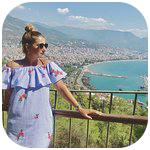

Солтан Ресторан Центр Отдыха
ОТЗЫВЫ
Дагниджа
Хорошее обслуживание и вкусная еда!
Мы ели там деловой обед. нам досталось
тихое место в национальном стиле, еда отличная. Я веган и
тоже нашла для себя много вариантов. профессиональный и
вежливый персонал!

Линка
Цена порадовала
Часто проходим мимо этого ресторана и
видим какое количество людей едят в этом заведении. Вот и
решили зайти и попробовать.
Меню включает в себя большое количество блюд. Приятно,
что картинки соответствуют реальности))
официант подошедший к нам немного растерялся
(возможно был новеньким), но тут же его подхватил другой,
принял наш заказ и ответил на все наши вопросы. Приятно,
что еда подоспела к нам очень быстро. Порции большие, еда
вкусная, а цена так вообще обрадовала!

Евгений
Красивый, восточный стиль
Сам зал ресторана оформлен красиво в восточном
стиле. Выбор блюд в меню большой, еда вкусная и приносят быстро, только
кофе пришлось немного ждать. Официантов очень много и шныряют туда сюда,
создаётся впечатление, что склоняются без дела. Мне показалось не очень
уютно, но открытая кухня понравилась.

Елена.С
Популярный Ресторан
Ресторан расположен на 3 этаже торгового
центра Berkarar. У Солтана есть множество ресторанов по всему
городу, но лучшие блюда подаются в Беркараре. Еда турецкая и
включает в себя супы и шашлыки в качестве второго блюда.
Еда вкусная и подается довольно быстро, поэтому многие сотрудники
офиса из близлежащих стран любят приезжать туда, чтобы пообедать. Еда
там довольно дешевая.

Дарбах
Большой Выбор
Хорошее и удобное место.
Большой выбор: у них есть различные меню типами еды.
Так много сотрудников, что почти невозможно сделать ваш разум.
Еда была хорошей.Единственная проблема, с которой мы столкнулись,
заключалась в том, что было очень громко, что происходило вечеринку
по случаю дня рождения, громкая музыка и в рекламе о громкоговорителе.
Мы не могли общаться!(PS: Нет подают алкоголь)